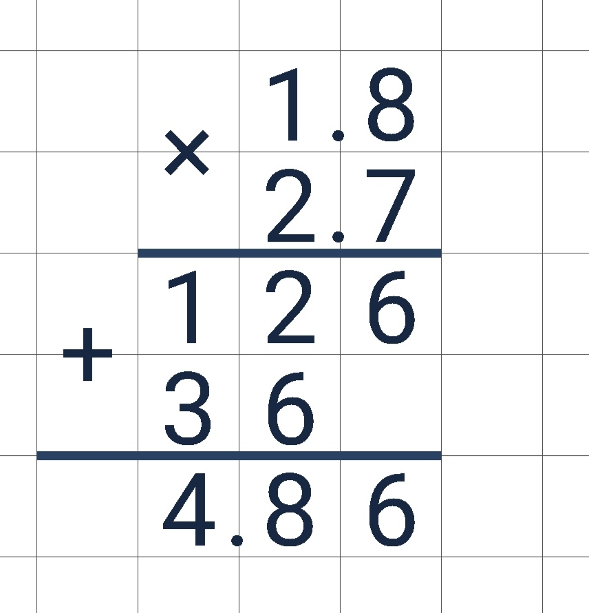
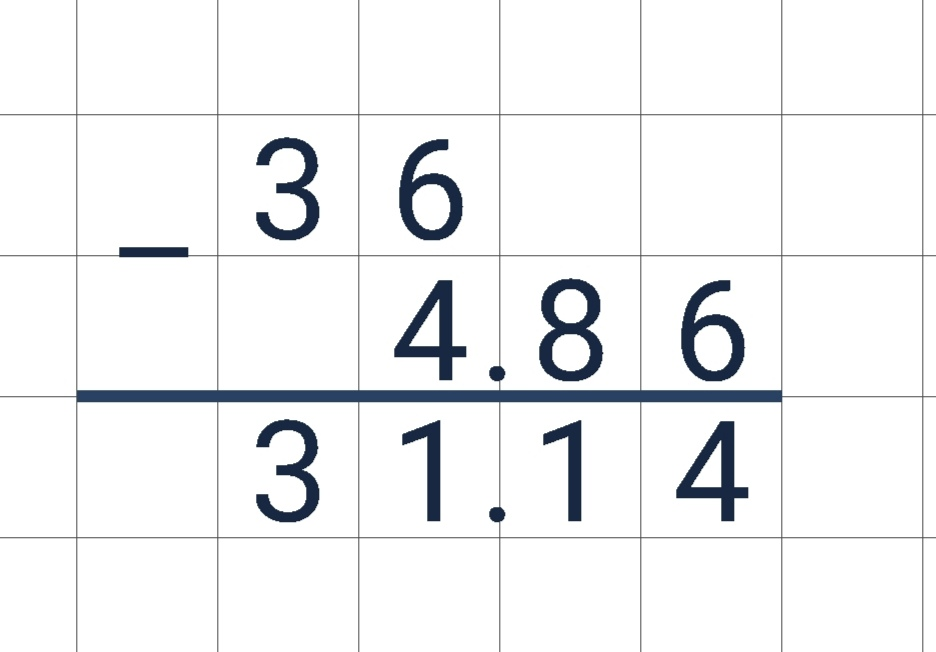
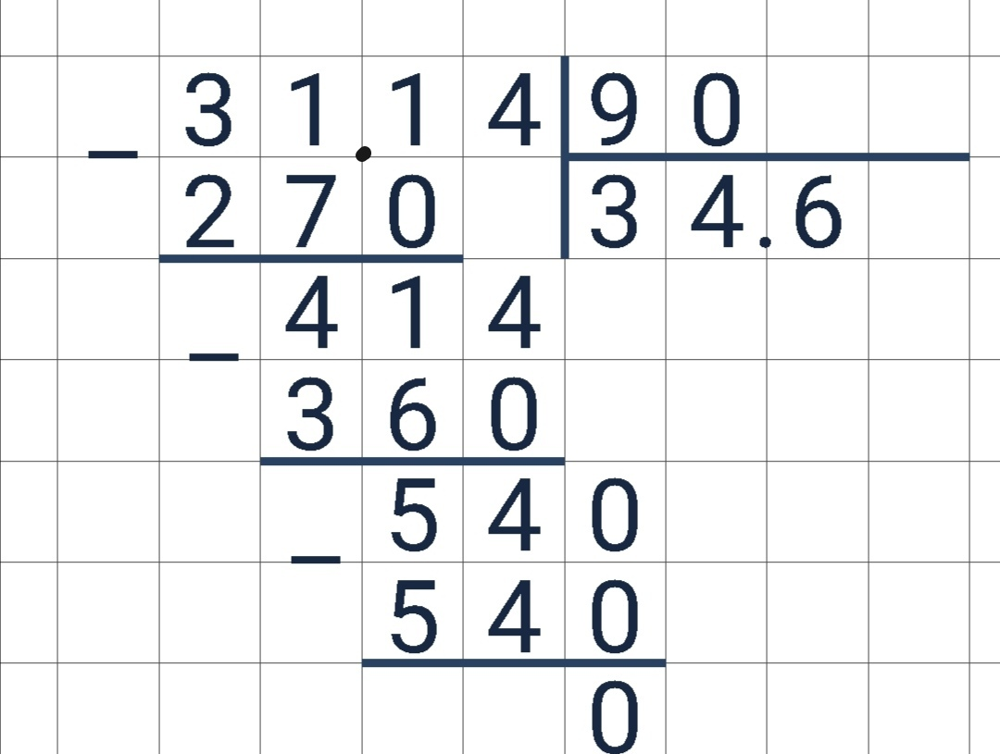

Домашние задания на 13 мая
Биология
Учебник стр. 104-105 читать, ? устно, термины с определениями учить. РТ №6(стр.82). Посмотреть
https://interneturok.ru/lesson/biology/5-klass/tsarstvo-griby/griby-parazity
Ответы
Математика
Стр. 264, задание номер 6 „Проверь себя " В тетради
Ответы
(36-1.8*2,7):0.9=34,6 

